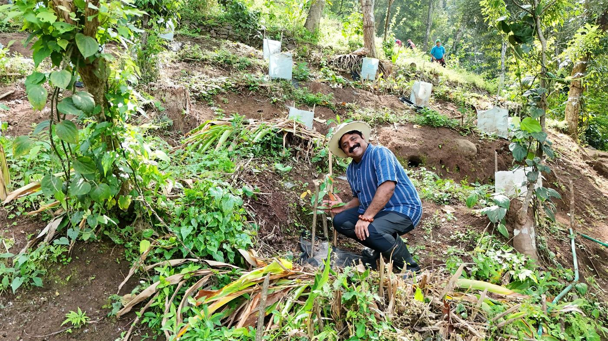

Quality through care
Every harvest begins with attention to the crop. Selective picking, careful handling and thoughtful processing help preserve the natural characteristics of our coffee.
A relationship between the land, the people who cultivate it, and the life that grows around them.

Nechekattu Farm is situated in Vandiperiyar, Idukki, Kerala, surrounded by the rich landscapes of the Western Ghats.
Our farm represents a relationship between agriculture, nature and the communities who cultivate the land. Coffee, pepper, cardamom and other spices thrive in this landscape, where climate, soil, rainfall and shade create unique growing conditions.
We believe that understanding the land is the foundation of good farming. Every crop, every harvest and every farming practice reflects our connection to this environment.
Every harvest begins with attention to the crop. Selective picking, careful handling and thoughtful processing help preserve the natural characteristics of our coffee.
Coffee and spices grow within a diverse agricultural landscape where shade, soil health and biodiversity are part of the farming environment.
Our farm is built around the people who work the land, the knowledge they carry and the relationships that make farming possible.
The Periyar River flows through Vandiperiyar, a town connected to the region’s tea, coffee and pepper plantations. Thekkady and the Periyar landscape are nearby.
Explore Nechekattu Farm in Google Maps
Discover the landscape through the crops, the people and the stories that make it a farm.